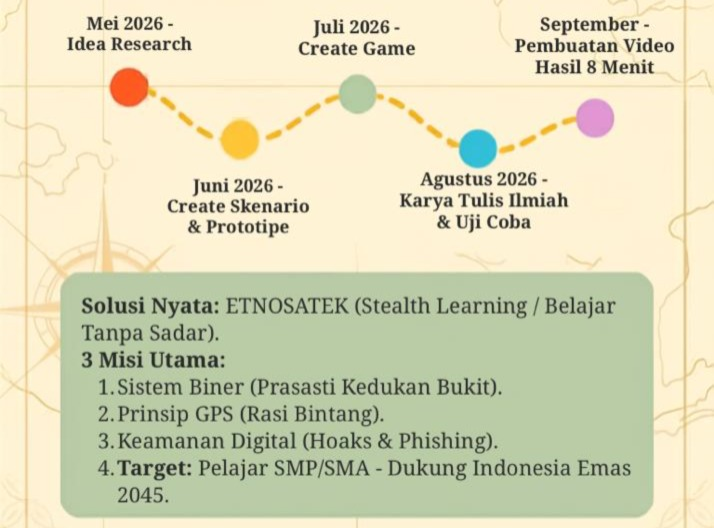

Cara Main ETNOSATEK
1. Klik tombol "Mulai Petualangan" di bawah.
2. Ikuti alur cerita, jelajahi misi Prasasti, Laut, dan Tablet Digital.
Mulai Sekarang →

1. Klik tombol "Mulai Petualangan" di bawah.
2. Ikuti alur cerita, jelajahi misi Prasasti, Laut, dan Tablet Digital.
Mulai Sekarang →